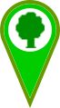

<!DOCTYPE html>
<html>

<head>
	<meta charset="utf-8" />
	<title>FAMAI - Parques, Itajaí-SC</title>
	<link rel="icon" type="image/png" href="images/favicon-96x96.png" sizes="96x96">
	<link rel="icon" type="image/png" href="images/favicon-16x16.png" sizes="16x16">
	<link rel="icon" type="image/png" href="images/favicon-32x32.png" sizes="32x32">
	<meta name="viewport" content="initial-scale=1,maximum-scale=1,user-scalable=no" />
	<link rel="stylesheet" href="lib/leaflet.css" />
	<link rel="stylesheet" href="lib/leaflet-search.min.css" />
	<link rel="stylesheet" href="lib/leaflet.draw.css" />
	<link rel="stylesheet" href="lib/MarkerCluster.css" />
	<link rel="stylesheet" href="lib/MarkerCluster.Default.css" />

	<style>
		body {
			margin: 0;
			padding: 0;
		}

		#map {
			position: absolute;
			top: 0;
			bottom: 0;
			width: 100%;
		}

		.leaflet-container {
			background: #ffffff;
		}

		.leaflet-control-draw-measure {
			background-image: url(images/measure-control.png);
		}

		.leaflet-container .leaflet-control-search {
			left: 2px;
		}
	</style>
</head>

<body>
	<div id="map"></div>
	<script src="lib/jquery-3.3.1.min.js"></script>
	<script src="lib/leaflet.js"></script>
	<script src="lib/csv2geojson.js"></script>
	<script src="lib/leaflet-search.min.js"></script>
	<script src="lib/leaflet.draw.js"></script>
	<script src="lib/leaflet.measurecontrol.min.js"></script>
	<script src="lib/leaflet-hash.js"></script>
	<script src="lib/leaflet.markercluster.js"></script>
	<script src="lib/leaflet.markercluster.layersupport.js"></script>
	<script>

		let tilegoogle = new L.layerGroup();
		let tilesmu = new L.LayerGroup();

		//div do mapa
		let map = new L.Map('map', {
			zoom: 16,
			minZoom: 11,
			maxZoom: 17,
			maxBounds: [
				//south west
				[-27.1279, -48.8954],
				//north east
				[-26.8074, -48.5845]
			],
			center: new L.latLng([-26.9244, -48.6394]),
			layers: [tilesmu],
			zoomControl: false
		});

		//hash, acesso a coordenadas e zoom pela barra de endereços ex: .html#12/37.7631/-122.4437
		let hash = new L.Hash(map);

		//marca d´água
		L.Control.Watermark = L.Control.extend({
			onAdd: (map) => {
				var img = L.DomUtil.create('img');

				img.src = 'images/brasaofamai.png';
				img.style.width = '320px';

				return img;
			},
			onRemove: (map) => { }
		});

		//título
		var titulomapa = L.control({ position: 'bottomright' });
		titulomapa.onAdd = function (map) {
			var div = L.DomUtil.create('div', 'info legend');
			div.innerHTML +=
				'<center><strong><font size="5">Parques e<br/>zonas de amortecimento</font></strong>'
			return div;
		};
		titulomapa.addTo(map);

		L.control.watermark = (opts) => {
			return new L.Control.Watermark(opts);
		}
		L.control.watermark({ position: 'bottomright' }).addTo(map);

		//barra escala
		L.control.scale({ position: "bottomright", imperial: false }).addTo(map);

		//Norte
		let north = L.control({ position: "bottomright" });
		north.onAdd = (map) => {
			let div = L.DomUtil.create("div", "info legend");
			div.innerHTML = '';
			return div;
		}
		north.addTo(map);

		//Mapa base, google
		new L.TileLayer('http://{s}.google.com/vt/lyrs=s&x={x}&y={y}&z={z}', {
			opacity: 0.6,
			maxZoom: 17,
			transparent: false,
			attribution: '©2018 Google, FAMAI - Itajaí/SC, <a href="mailto:jaceguay@itajai.sc.gov.br?Subject=WebGIS" target="_top">SIE</a>',
			subdomains: ['mt0', 'mt1', 'mt2', 'mt3']
		}).addTo(tilegoogle);

		//zona urbana e geral
		new L.TileLayer('tiles/basemap/10-17/{z}/{x}/{y}.png', {
			opacity: 0.6,
			minZoom: 10,
			attribution: '©2018 Google, FAMAI - Itajaí/SC, <a href="mailto:jaceguay@itajai.sc.gov.br?Subject=WebGIS" target="_top">SIE</a>',
			maxZoom: 17
		}).addTo(tilesmu);

		//zona rural, zoom 17
		new L.TileLayer('tiles/basemap/17rural/{z}/{x}/{y}.png', {
			opacity: 0.6,
			minZoom: 17,
			maxZoom: 17
		}).addTo(tilesmu);

		//bairros
		map.addLayer(new L.TileLayer('tiles/bairros/{z}/{x}/{y}.png', {
			opacity: 0.5,
			minZoom: 10,
			maxZoom: 16
		}));

		//Equipamentos Urbanos
		//#Saúde#
		let sau = new L.LayerGroup();
		let sauicon = L.icon({
			iconUrl: 'images/pesaude.png',
			iconAnchor: [16, 60],
			popupAnchor: [0, -50],
			iconSize: [33, 60]
		});

		$.ajax({
			type: "GET",
			url: "https://docs.google.com/spreadsheets/d/e/2PACX-1vR8mVvyj07poY3l-BvOfX1UFx4EuuSWTP5972NUq0OUEoFy9woWSn85dgWJJX_x3wDc4MWswdxSq9Ad/pub?gid=0&single=true&output=tsv",
			dataType: "text",
			success: (data) => {
				csv2geojson.csv2geojson(data,
					{
						latfield: 'latitude',
						lonfield: 'longitude',
						delimiter: '\t'
					},
					(err, data) => {
						L.geoJSON(data, {
							pointToLayer: (feature, latlng) => {
								let marker = L.marker(latlng, { icon: sauicon });
								marker.bindPopup(
									'<strong>' + '<u>' + feature.properties.nome + '</u>' + '</strong>' + '<br/>' +
									'Endereço: ' + feature.properties.end + ', ' + feature.properties.bairro + '<br/>' +
									'Telefone: ' + feature.properties.telefone
								);
								return marker;
							}
						}).addTo(sau);
					});
			}
		});

		//#Prédios públicos#
		let ppubl = new L.LayerGroup();
		let ppublicon = L.icon({
			iconUrl: 'images/peedifpublic.png',
			iconAnchor: [16, 60],
			popupAnchor: [0, -50],
			iconSize: [33, 60]
		});

		$.ajax({
			type: "GET",
			url: "https://docs.google.com/spreadsheets/d/e/2PACX-1vR8mVvyj07poY3l-BvOfX1UFx4EuuSWTP5972NUq0OUEoFy9woWSn85dgWJJX_x3wDc4MWswdxSq9Ad/pub?gid=1093102967&single=true&output=tsv",
			dataType: "text",
			success: (data) => {
				csv2geojson.csv2geojson(data,
					{
						latfield: 'latitude',
						lonfield: 'longitude',
						delimiter: '\t'
					},
					(err, data) => {
						L.geoJSON(data, {
							pointToLayer: function (feature, latlng) {
								let marker = L.marker(latlng, { icon: ppublicon });
								marker.bindPopup(
									'<strong>' + '<u>' + feature.properties.nome + '</u>' + '</strong>' + '<br/>' +
									'Endereço: ' + feature.properties.end + ', ' + feature.properties.bairro + '<br/>' +
									'Telefone: ' + feature.properties.telefone
								);
								return marker;
							}
						}).addTo(ppubl);
					});
			}
		});

		//#Educação#
		let educa = new L.LayerGroup();
		let educaicon = L.icon({
			iconUrl: 'images/paeduca.png',
			iconAnchor: [16, 60],
			popupAnchor: [0, -50],
			iconSize: [33, 60]
		});

		$.ajax({
			type: "GET",
			url: "https://docs.google.com/spreadsheets/d/e/2PACX-1vR8mVvyj07poY3l-BvOfX1UFx4EuuSWTP5972NUq0OUEoFy9woWSn85dgWJJX_x3wDc4MWswdxSq9Ad/pub?gid=2142845276&single=true&output=tsv",
			dataType: "text",
			success: (data) => {
				csv2geojson.csv2geojson(data,
					{
						latfield: 'latitude',
						lonfield: 'longitude',
						delimiter: '\t'
					},
					(err, data) => {
						L.geoJSON(data, {
							pointToLayer: function (feature, latlng) {
								let marker = L.marker(latlng, { icon: educaicon });
								marker.bindPopup(
									'<strong>' + '<u>' + feature.properties.nome + '</u>' + '</strong>' + '<br/>' +
									'Endereço: ' + feature.properties.end + ', ' + feature.properties.bairro + '<br/>' +
									'Telefone: ' + feature.properties.telefone
								);
								return marker;
							}
						}).addTo(educa);
					});
			}
		});

		//#Desenvolvimento Social#
		let dsocial = new L.LayerGroup();
		let dsocialicon = L.icon({
			iconUrl: 'images/pedesenvsocial.png',
			iconAnchor: [16, 60],
			popupAnchor: [0, -50],
			iconSize: [33, 60]
		});

		$.ajax({
			type: "GET",
			url: "https://docs.google.com/spreadsheets/d/e/2PACX-1vR8mVvyj07poY3l-BvOfX1UFx4EuuSWTP5972NUq0OUEoFy9woWSn85dgWJJX_x3wDc4MWswdxSq9Ad/pub?gid=176903385&single=true&output=tsv",
			dataType: "text",
			success: (data) => {
				csv2geojson.csv2geojson(data,
					{
						latfield: 'latitude',
						lonfield: 'longitude',
						delimiter: '\t'
					},
					(err, data) => {
						L.geoJSON(data, {
							pointToLayer: (feature, latlng) => {
								let marker = L.marker(latlng, { icon: dsocialicon });
								marker.bindPopup(
									'<strong>' + '<u>' + feature.properties.nome + '</u>' + '</strong>' + '<br/>' +
									'Endereço: ' + feature.properties.end + ', ' + feature.properties.bairro + '<br/>' +
									'Telefone: ' + feature.properties.telefone
								);
								return marker;
							}
						}).addTo(dsocial);
					});
			}
		});

		//#Áreas esportivas#
		let esportiv = new L.LayerGroup();
		let esportivicon = L.icon({
			iconUrl: 'images/paareasesportivas.png',
			iconAnchor: [16, 60],
			popupAnchor: [0, -50],
			iconSize: [33, 60]
		});

		$.ajax({
			type: "GET",
			url: "https://docs.google.com/spreadsheets/d/e/2PACX-1vR8mVvyj07poY3l-BvOfX1UFx4EuuSWTP5972NUq0OUEoFy9woWSn85dgWJJX_x3wDc4MWswdxSq9Ad/pub?gid=1559994691&single=true&output=tsv",
			dataType: "text",
			success: (data) => {
				csv2geojson.csv2geojson(data,
					{
						latfield: 'latitude',
						lonfield: 'longitude',
						delimiter: '\t'
					},
					(err, data) => {
						L.geoJSON(data, {
							pointToLayer: (feature, latlng) => {
								let marker = L.marker(latlng, { icon: esportivicon });
								marker.bindPopup(
									'<strong>' + '<u>' + feature.properties.nome + '</u>' + '</strong>' + '<br/>' +
									'Endereço: ' + feature.properties.end + ', ' + feature.properties.bairro + '<br/>' +
									'Telefone: ' + feature.properties.telefone
								);
								return marker;
							}
						}).addTo(esportiv);
					});
			}
		});

		//#Praças#
		let pracas = new L.LayerGroup();
		let pracasicon = L.icon({
			iconUrl: 'images/ppracas.png',
			iconAnchor: [16, 60],
			popupAnchor: [0, -50],
			iconSize: [33, 60]
		});

		$.ajax({
			type: "GET",
			url: "https://docs.google.com/spreadsheets/d/e/2PACX-1vR8mVvyj07poY3l-BvOfX1UFx4EuuSWTP5972NUq0OUEoFy9woWSn85dgWJJX_x3wDc4MWswdxSq9Ad/pub?gid=320479177&single=true&output=tsv",
			dataType: "text",
			success: (data) => {
				csv2geojson.csv2geojson(data,
					{
						latfield: 'latitude',
						lonfield: 'longitude',
						delimiter: '\t'
					},
					(err, data) => {
						L.geoJSON(data, {
							pointToLayer: (feature, latlng) => {
								let marker = L.marker(latlng, { icon: pracasicon });
								marker.bindPopup(
									'<strong>' + '<u>' + feature.properties.tipo + ' ' + feature.properties.nome + '</u>' + '</strong>' + '<br/>' +
									'' + '<br/>' +
									'Lei: ' + feature.properties.lei + '<br/>' +
									'Endereço: ' + feature.properties.end + ', ' + feature.properties.bairro + '<br/>' +
									'Equipamentos: ' + feature.properties.equip
								);
								return marker;
							}
						}).addTo(pracas);
					});
			}
		});

		//marker clustering com suporte para layers
		let mcg = L.markerClusterGroup.layerSupport({ disableClusteringAtZoom: 16 }).addTo(map);
		mcg.checkIn([sau, ppubl, educa, dsocial, esportiv, pracas]);

		let zonasadm = new L.LayerGroup();
		//Zonas administrativas
		$.getJSON("data/zonasadm.geojson", (data) => {
			L.geoJson(data, {
				style: (feature) => {
					let corzona;
					cormz = feature.properties.nome;
					if (cormz == 'VILA OPERÁRIA') corzona = "#e7e3fa";
					else if (cormz == 'SÃO VICENTE') corzona = "#ffffbd";
					else if (cormz == 'SÃO JUDAS') corzona = "#fff3e9";
					else if (cormz == 'SÃO JOÃO') corzona = "#e1e1e1";
					else if (cormz == 'SALSEIROS') corzona = "#f1e2cc";
					else if (cormz == 'RESSACADA') corzona = "#f1e2cc";
					else if (cormz == 'PRAIA BRAVA DE ITAJAÍ') corzona = "#f1e2cc";
					else if (cormz == 'PACIÊNCIA') corzona = "#f1e2cc";
					else if (cormz == 'LIMOEIRO') corzona = "#fff2ae";
					else if (cormz == 'LARANJEIRAS') corzona = "#fff2ae";
					else if (cormz == 'ITAIPAVA') corzona = "#fff2ae";
					else if (cormz == 'FAZENDA') corzona = "#fff2ae";
					else if (cormz == 'ESPINHEIROS') corzona = "#e6f5c9";
					else if (cormz == 'DOM BOSCO') corzona = "#e6f5c9";
					else if (cormz == 'CORDEIROS') corzona = "#f5daec";
					else if (cormz == 'CIDADE NOVA') corzona = "#f2ddf5";
					else if (cormz == 'CENTRO') corzona = "#f4daeb";
					else if (cormz == 'CANHANDUBA') corzona = "#f4e6f0";
					else if (cormz == 'CAMPECHE') corzona = "#f4e7f0";
					else if (cormz == 'CABEÇUDAS') corzona = "#f4dbeb";
					else if (cormz == 'BRILHANTE II') corzona = "#cbd5e8";
					else if (cormz == 'BRILHANTE') corzona = "#dae8d9";
					else if (cormz == 'BARRA DO RIO') corzona = "#e5f0e7";
					else if (cormz == 'ARRAIAL DOS CUNHA') corzona = "#dce0e8";
					else if (cormz == '(VOLTA DE CIMA)') corzona = "#fdcdac";
					else if (cormz == '(SÃO ROQUE)') corzona = "#e1e1e1";
					else if (cormz == '(RIO NOVO - COLÔNIA JAPONESA)') corzona = "#fdcdac";
					else if (cormz == '(RIO DO MEIO)') corzona = "#fdcdac";
					else if (cormz == '(MURTA)') corzona = "#b3e2cd";
					else if (cormz == '(KM12)') corzona = "#e8d8eb";
					else if (cormz == '(ESPINHEIRINHOS)') corzona = "#c7e2d6";
					else if (cormz == '(BAIA)') corzona = "#c6e2d6";
					else corzona = "#fff";
					return { color: "#808080", fillColor: corzona, fillOpacity: 0.4, weight: 2 };
				},

				onEachFeature: (feature, layer) => {
					layer.bindTooltip(
						feature.properties.nome,
						{ permanent: true, direction: "center" }
					);
					layer.bindPopup(
						'<strong>' + feature.properties.nome + '</strong>' + '</br>' +
						feature.properties.tipo
					);
				}

			}).addTo(zonasadm);
		});

		//Limites Município
		$.getJSON("data/limitesmunicipais.geojson", (data) => {
			L.geoJson(data, {
				style: (feature) => {
					return {
						color: '#000000',
						fill: false
					};
				},
			}).addTo(map);
		});

		//Setores Sensitários
		let censo2010 = new L.LayerGroup();
		$.getJSON("data/censo2010.geojson", (data) => {
			L.geoJson(data, {
				style: (feature) => {
					return {
						weight: 1,
						color: '#0000ff',
						fillOpacity: 0.1
					};
				},

				onEachFeature: (feature, layer) => {
					let situasetor;
					situacod = feature.properties.situacao_s;
					if (situacod == '8') {
						situasetor = 'Zona rural, exclusive aglomerado rural';
					}
					else if (situacod == '5') {
						situasetor = 'Aglomerado rural isolado – povoado';
					}
					else if (situacod == '4') {
						situasetor = 'Aglomerado rural de extensão urbana';
					}
					else if (situacod == '2') {
						situasetor = 'Área urbana isolada';
					}
					else {
						situasetor = 'Área urbanizada de cidade ou vila';
					};

					layer.bindPopup(
						'<strong>' + feature.properties.cd_geocodi + '</strong>' + '</br>' +
						'bairro: ' + feature.properties.nome_do_ba + '</br>' +
						'pessoas residentes: ' + feature.properties.v014 + '</br>' +
						'situação do setor: ' + situasetor
					);
				}
			}).addTo(censo2010);
		});

		//perímetro urbano
		$.getJSON("data/perimetrourbano79.geojson", (data) => {
			L.geoJson(data, {
				style: (feature) => {
					return { color: "#ff0000", dashArray: "10 10", Opacity: 0.8, weight: 8 };
				}
			}).addTo(zonasadm);
		});

		//Camadas base
		let baseMaps = {
			"Sistema viário": tilesmu,
			"Imagem, Google maps": tilegoogle
		};
		L.control.layers(baseMaps, null, { collapsed: false, position: 'topleft' }).addTo(map);

		//Camadas
		let overlayMaps = {
			"<strong>Perímetro urbano:</strong></br>(<a href='http://leismunicipa.is/kqpfg' target='_blank' >Leiº1000/1970</a>, <a href='http://leismunicipa.is/gqphk' target='_blank' >Leiº2147/1984</a> e <a href='http://leismunicipa.is/kjpiq' target='_blank' >Leiº4157/2004</a>) e </br><strong>Zonas administrativas:</strong></br>(<a href='http://leismunicipa.is/akipq' target='_blank' >Leiº3359/1998</a>, <a href='http://leismunicipa.is/qdpkj' target='_blank' >Leiº3673/2001</a> e <a href='http://leismunicipa.is/snvrj' target='_blank' >Leiº6790/2017</a>)": zonasadm,
			"<strong>Setores Censitários 2010</strong>": censo2010,
			"Saúde": sau,
			"Prédios públicos": ppubl,
			"Educação": educa,
			"Desenvolvimento Social": dsocial,
			"Áreas esportivas": esportiv,
			"Praças": pracas
		};
		L.control.layers(null, overlayMaps, { collapsed: true, position: 'bottomleft' }).addTo(map);

		//Botão zoom posicionado
		L.control.zoom({ position: 'topleft' }).addTo(map);

		//Ferramenta medidas
		L.Control.measureControl().addTo(map);

		//sviario para pesquisa
		let pesquisa = new L.LayerGroup();
		$.getJSON("data/sviario.geojson", (data) => { L.geoJson(data).addTo(pesquisa) });

		//Barra pesquisa
		let searchControl = new L.Control.Search({
			layer: pesquisa,
			propertyName: 'nome',
			circleLocation: false,
			marker: false,
			textPlaceholder: "Pesquisa por nome da via",
			textErr: "Não localizado",
			textCancel: "Cancelar",
			zoom: 17,
			openPopup: false,
			collapsed: true,
			initial: false,
			position: 'topleft',
			minLength: 2,
			firstTipSubmit: true
		});
		map.addControl(searchControl);
		//camada não precisa ser visível, apenas para searchcontrol
		map.removeLayer(pesquisa);

		//Limites Parques
		$.getJSON("data/parquesperimetro.geojson", (data) => {
			L.geoJson(data, {
				style: (feature) => {
					return {
						color: '#009933',
						fill: false,
						dashArray: '5',
						weight: 3
					};
				},
			}).addTo(map);
		});

		//Zoneamento Parques
		//Cores
		function corpzona(d) {
			//console.log(d);
			return d == 'APC' ? '#608503' :
				d == 'APE' ? '#87c03c' :
					d == 'ACE' ? '#969b35' :
						d == 'AUL' ? '#fa857c' :
							d == 'AUR' ? '#00b3be' :
								d == 'APR' ? '#e1b279' :
									'#b6da75';
		};

		function estilo(feature) {
			//console.log(feature);
			return {
				fillColor: corpzona(feature.properties.zona),
				stroke: false,
				fillOpacity: 0.6
			};
		};

		$.getJSON("data/parqueszoneamento.geojson", (data) => {
			L.geoJson(data, {
				style: estilo,
				onEachFeature: (feature, layer) => {
					layer.bindPopup(feature.properties.denomina + '</br>' + feature.properties.zona)
				}
			}).addTo(map);
		});

		//Caminhos
		map.createPane('caminhos');
		map.getPane('caminhos').style.zIndex = 650;
		$.getJSON("data/parquescaminhos.geojson", (data) => {
			L.geoJson(data, {
				pane: 'caminhos',
				style: (feature) => {
					return {
						color: '#990033',
						weight: 5
					};
				},
				onEachFeature: (feature, layer) => {
					layer.bindPopup(feature.properties.denomina + '</br>' + feature.properties.nome)
				}
			}).addTo(map);
		});

	</script>
</body>

</html>